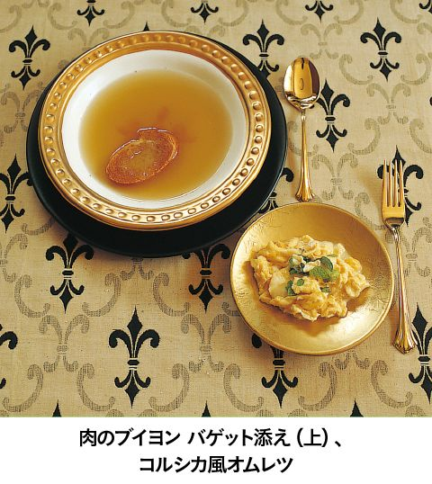

| 迷宮レストラン 第３巻 | |
| 河合 真理 | |
| (2006) | |
ＮＨＫ出版
迷宮レストラン 第３巻
河合真理
このレストランのコンセプトは、事前にお迎えする方の情報を収集した上で、毎回、ただ一人のお客様のために、お好みに合わせた料理をご用意することです。
食材については、それぞれの時代、土地に存在していると思われるものの中から選び、調理道具に関しても可能なかぎり実在していたものに近づけて使用することを前提にして、すべてのレシピを作っています。
なかには個々の時代や土地に実在するレシピをそのままに再現しているものもありますが、ほとんどの料理は、資料から得られた情報を参考に、シェフが考案創造したレシピですので、その点はご了承ください。
あるとき私は、子供のころから憧れていた人物、スペインの建築家ガウディの伝記を読んでいて、彼が何を食べていたのだろうと気になりはじめました。そして、資料を集めて調べているうちに、あっという間に夢中になってしまいました。
誰にとっても、食べるということはごく日常的に行われている行為です。それゆえ、食事に対する考え方は、その人の生まれ育った環境や、人生観が無意識に映し出されていくものだと思うのです。
例えば、ナポレオン１世。眠る時間さえ惜しんだ彼にとって、食事もまた出来れば省略してしまいたい通過儀礼の一つに過ぎなかったのではないでしょうか。また、レオナルド・ダ・ヴィンチは自身の思想や美学に従って、健康的でバランスのとれた理想的な食生活を実現していました。先にあげたアントニ・ガウディにとっては、退廃に誘うすべての欲望を回避し、ストイックに自己実現をしていくための要素の一つとして食があったのかもしれません。ダーウィンにとっては学びの場として好奇心を満たしてくれるものであり、ファーブルにとっては、洗練された楽しみの場であったように思います。
資料を読みあさるにつれて、私の中で彼らの姿が現実味を帯びていくようになり、それに伴い、「この素材をこう料理したら、この人は喜んでくれるかもしれない」「こんな料理を食べてくれたら、もう少し体調がよくなったかもしれない」などと考えるようになっていました。資料にある未知の食材や調理法にふれてみたいという気持ちも手伝って、具体的なレシピが次々と頭に浮かぶようになってきたのです。
そんなことから、今回、この迷宮レストランを開店する運びとなりました。
さて、ただいまから、迷宮レストランがオープンいたします。お料理とともに、時空の旅をごゆっくりお楽しみください。
迷宮レストラン・オーナーシェフ 河合 真理
デザイン 中嶋香織
イラスト 古屋亜見子
撮影 長嶺輝明
スタイリスト 西村千寿
校正 井口泰子
この本のレシピで使用している計量カップはカップ１＝２００㎖、計量スプーンは大さじ１＝15㎖、小さじ１＝５㎖です。
中世イギリスの食卓
シェイクスピアの時代、ロンドンはヨーロッパ最大の都市であり、食生活も豊かでした。
当時、ヨーロッパの食文化で特徴的な食材の一つにアーモンドがあげられます。その食べ方の一つはアーモンドミルク。これはアーモンドの皮をむいて粉末にしたものを水出しし、加熱して作ったミルク状のものです。甘味があり、あっさりしていて、豆乳のような癖はまったくありません。これをミルク同様に様々な料理に使っています。このほかにも粉状にしたアーモンドを甘くして練り込んだマジパンは、大変人気のあった菓子で、シェイクスピア劇の宴会シーンなどにも登場します。
エキゾチックなスパイス類も好んで使われており、特に高級品として珍重されていたのはサフラン。また、当時ヨーロッパではナツメグがよく使われていますが、イギリス人はナツメグの外皮であるメースのほうを好んでいました。
ハーブ類も好まれ、趣味人の間ではハーブを庭で育てることが流行しており、シェイクスピアもたくさんのハーブを栽培していました。彼はハーブの可憐な花を愛し、シェイクスピア劇の中にもたびたび印象的に登場させています。
そして、やはりヨーロッパでは肉食が好まれています。動物の乱獲を恐れ、教会が精進日（魚の日）などを法制化して漁業を振興させる政策もとられました。中でもイギリス人は大の肉好きとして有名でした。
飲み物はエール（ビールの一種）。イギリスでは葡萄の栽培ができないので、麦から造るエールがワインと同様の役割を担っていました。カロリーが高く栄養源としても食事代わりにも飲まれたようです。自然発酵させるものなので、品質の保持が難しく、粗悪品が出回るため、当時イギリスにはエールテスターなる品質管理官もいました。オランダやドイツからホップが輸入されようになり、品質が一定するようになったのは18世紀に入ってからのことです。
今回のメニューではパンを皿代わりに使っていますが、実際、当時のイギリスでは、小皿や取り皿の代わりに堅くなったパンが使われていて、手づかみで食べることが多く、手をぬぐうのにもこのパンが使われていたようです。
｜シェフによるメニュー説明｜
飲み物──ブラウンエール
朝食代わりに飲まれるほど、イギリス人にとって、エールは日常の飲み物でした。麦とイーストから造られ、ホップを入れるようになったのはずっと後のこと。父のジョン・シェイクスピアも、品質を評価するエールテスターをしていたとか。
ウィリアムが好んだといわれるブラウンエールです。
スープ──りんごとアーモンドミルクのスープ サフラン風味
当時、りんごの種類は２００種に及んだともいわれています。アーモンドミルクとサフランとの相性もよいので、りんごでスープを作りました。さっぱりとしていて食欲をそそられることと思います。
りんごとアーモンドミルクのスープ
材料
りんご４個、Ａ〔白ワインカップ２、蜂蜜大さじ１、レモンスライス２枚〕、アーモンドミルクカップ２、サフラン４本、ピスタチオナッツ適宜、塩・蜂蜜・胡椒各適宜
作り方
１ りんご２個は皮をむいて芯を除き、くし形に切る。Ａとともに鍋に入れ、煮立ったらアクを除き、弱火で汁けがなくなるまで蒸し煮にしてレモンを取り出し、裏ごしする。
２ 残りのりんご２個は絞ってジュースにする。
３ １にアーモンドミルク、サフランを加えてよく混ぜ、加熱する。
４ ３にりんごジュースを加え、程よい濃度になるまで煮て、味をみて塩、胡椒、蜂蜜を好みで加える。
５ 炒ったピスタチオナッツの殻を取り、薄皮をむいたものを４に散らす。
アーモンドミルク
材料
アーモンド粉１３０ｇ、冷水３００㎖
作り方
１ アーモンド粉は布で包みゆるく縛る。
２ １を分量の冷水に入れ、ときどきふってゆすりながら数時間つける。
※濃くしたいときは水に入れてから10分間くらい静かに煮出しよく絞る。
メイン──鹿肉の赤ワイン煮
料理書には、「いかに牛肉を鹿肉の味に近づけるか」についての方法が綴られているほど美味で、庶民にはなかなか手の届かなかった鹿肉。シェイクスピアも若気のいたりで鹿泥棒事件を起こしてしまったとか。スパイスをきかせ、レモンの皮やケイパーで味を調えました。また、16世紀には、一般的に取り皿として使用されていた、堅くなった厚切りのパンも用意しています。
鹿肉の赤ワイン煮
材料（４人分）
鹿肉４５０ｇ、たまねぎ１個、にんじん本、セロリ１本、ブラウンマッシュルーム８～10個、赤ワインカップ２、ナツメグ・メース各少々、レモン（国産）の皮（すりおろす）１個分、ケイパー大さじ２、パン粉大さじ２、胡椒・塩・サラダ油・バター各適宜
作り方
１ 鹿肉は食べやすい大きさの薄切りにし、たたいて平らにする。ナツメグ、メース、レモンの皮のすりおろし、胡椒少々をふりかけてもみこみ、塩少々をふる。
２ たまねぎ１個とにんじん、セロリをみじん切りにして、甘みが出るまでサラダ油大さじ１でよく炒めておく。
３ １をバター30ｇで炒め、マッシュルームの薄切りとたまねぎ個のくし形切りを加えて炒める。
４ ３に２と赤ワインを加え、煮立ったら塩少々で味を調え、ケイパーとパン粉を加えて水分がなくなるまで弱火で煮る。
野菜の副菜──そら豆のピュレ
南アメリカ原産のじゃがいもは、16世紀にはイギリスに伝えられていたものの、一般に受け入れられたのは18世紀に入ってからのことでした。そのため、鹿肉の付け合わせには、そら豆を使ったコクのあるピュレを用意しました。茶色くなるまで炒めたたまねぎと温めた赤ワインをかけてあります。
デザート──フルーツのフリッター
イギリス生まれのアルコール飲料エールとイーストを衣に入れ、果物にからめて熱したバターで揚げました。
「ロミオとジュリエット」や「ハムレット」に印象的に使われているローズマリーも揚げて添えました。こちらはほぐしてアクセントに。
デザート──マジパン
シェイクスピアの好んだハーブの花をイメージして形を作りました。色づけにはハーブやスパイスを使っています。
アラビアンナイトのめくるめく食の世界
女性に怨みを持ち、夜ごとに若い娘を夜伽させては殺していたペルシア王のもとにある日、大臣の娘シャハラザードが差し出されます。しかし賢いシャハラザードは毎夜、王に様々な物語を語り、「明日はもっと面白い話です」と引き延ばし、ついに千一夜が過ぎてしまうというお話が『千夜一夜物語』です。「シンドバッドの冒険」は、（バートン版では）その中の５３６夜から５６６夜にかけての物語で、７つの冒険から構成されています。
シンドバッドの物語の中には、ひき肉料理、ピスタチオ、胡桃、葡萄入り糖菓、焼いた子羊、ひな鳥、羊のひき肉、葡萄、インド椰子、干し果物の砂糖漬け、胡椒、肉桂、アーモンド入り練り菓子、砂糖と肉桂入りご飯、バターや脂の料理、クリームといった様々な食べ物が登場しています。また、『千夜一夜物語』全体から特徴のある料理名や料理法を調べてみると、シャーベット（ざくろ、さくらんぼ、レモンなどに砂糖と雪を入れたもの）、甘味をつけた麺類、肉を詰めた若鶏、にら料理ロズバシャ、熱い砂糖漬けのエジプト豆等々、多種多様です。全体的には甘いものや、肉桂などの香りの強い料理が多く、肉類は羊や鶏がほとんどです。
また、32夜目のお話には、香辛料と羊の刻み肉をなすに詰めたもの、ピーナツ、アーモンド、米、干し葡萄、胡椒、肉桂、羊の刻み肉を詰め込んだひな鳥の丸焼き、砂糖煮にした仏手柑を干して砂糖をまぶしたもの、ピーナツの粉をかけ薔薇水をかけたマハラビという粉菓子、アーモンドと砂糖とざくろを煮詰めた砂糖菓子のカタイエフなど具体的な材料の組み合わせが書かれていましたので、これがかなり参考になりました。
今回の献立は『千夜一夜物語』全般に登場するこれらの食材の中から選んで組み立てました。基本的にはペルシャ料理を参考にしていますが、ほとんどは想像して創作しています。
ページをめくるたびに、スケールの大きいとんでもない出来事が連続し、読破してみるとアラビアンナイトの不思議な世界は実はかなり大人向けの物語でありましたので、落ち着いた贅沢さをイメージしています。実を言えばシンドバッドよりアラジンのほうが個人的には好みでしたが、アラジンはアラビアではなく中国の方でしたので、今回はシンドバッドになりました。魔法の絨毯の上での食事はいずれ、またいつか。
｜シェフによるメニュー説明｜
飲み物──赤ワイン
『千夜一夜物語』の中によく登場する飲み物は、果物を使った冷たいシャーベットでした。コーランの中にはワインは魔性の飲み物とも書かれているのですが、お話の中ではワインも飲まれているようです。シンドバッドも第５の冒険旅行の際には、元気をつけるため、葡萄汁を発酵させ純良な葡萄酒を造っています。甘みのある料理もありますので、食事との相性から赤ワインを選びました。
前菜──にらの水餃子
第27夜目の物語は、ある花婿が結婚式当日に大好きな「名代のにら料理」を食べてしまい、その臭いのため花嫁に嫌われて恐ろしい罰を受けるという話です。１人の男の人生を変えてしまうほどの大変な料理です。前菜なので軽めの仕上げの水餃子風に仕立てました。さっぱりとしたヨーグルトソースで食べてください。唐辛子粉も用意していますので、お好みで申し付けてください。

スープ──アフガン風ドライフルーツスープ
入手したアフガン風のレシピそのままに作りました。甘いドライフルーツ、豆、ナッツ、米、たまねぎ、牛肉を、シナモン、砂糖、りんご酢、ミント、塩で味付けした、コクのある甘酸っぱい肉団子のスープです。次の航海にはもう出ないとのことですが、まずは元気の出そうなスープを用意しました。
アフガン風ドライフルーツスープ
材料（４人分）
Ａ〔干しすもも（プルーンで可）・干し杏子・干し葡萄（黒）・干し葡萄（白）各カップ〕、牛ひき肉２００ｇ、たまねぎ（小）１個、米カップ１、ひよこ豆（ゆでる）大さじ２、胡桃５個、シナモン・バター・砂糖・塩・ミント・りんご酢各適宜
作り方
１ Ａのドライフルーツは水洗いして１晩水につける。
２ たまねぎはみじん切りにする。
３ ひき肉と２の半量、塩を合わせ、胡桃大の大きさに丸める。
４ 残りの２はバターで炒め、米、水カップ６、塩を加え、弱火で30分間煮込む。
５ 水きりした１と３、ひよこ豆、胡桃のみじん切りを加え、さらに20分間煮込む。
６ シナモン、砂糖、塩、りんご酢で味を調え、盛り付けたらミントを散らす。
メイン──魚のパラオとナーン
パラオはおもてなし用の贅沢料理です。本来は羊等の肉で作りますが、本日は海の男シンドバッドのために魚で用意しました。ほうぼうとかさごでとったサフラン風味のスープで炊いたご飯に具材を加え、オーブンで焼き上げました。モロッコ風のレモンの塩漬けとの組み合わせをお楽しみください。パラオにはパンを添えるそうですので、平焼きにしたナーンも一緒にどうぞ。
魚のパラオ
◎モロッコ風レモンの塩漬け（魚のパラオ用）
材料（作りやすい分量）
レモン５個、塩約60ｇ、レモン汁適宜、Ａ（シナモンスティック１本、クローブ３個、コリアンダーシード５個、黒胡椒４粒、ローリエ１枚）
作り方
１ 各々のレモンの下から１cmのところまで縦に４つ切り込みを入れ、切り口を開いて塩を適宜入れて、元の形に戻す。
２ 煮沸した瓶の底に大さじ１の塩をふり、１のレモンを瓶に入れ、間に塩をふり、Ａのスパイスをところどころにはさみ、レモンを押さえながらレモン汁を絞り出すようにして詰める。
３ レモン汁がレモンがかぶるくらいの量がなければ、別にレモン汁を足してレモンに完全にかぶるようにする。
４ 暖かい場所に１か月くらいおき、ときどき瓶をひっくり返して混ぜる。
◎魚のパラオを作る
材料
ほうぼう１匹、かさご１匹、たまねぎ 個、Ｂ〔にんにく１個、パセリ４本、タイムの枝２本、ローリエ１枚、サフラン適宜〕、米カップ２、にんじん５cm、クミンシード小さじ１、ピスタチオナッツカップ～、レモンの塩漬け
個、Ｂ〔にんにく１個、パセリ４本、タイムの枝２本、ローリエ１枚、サフラン適宜〕、米カップ２、にんじん５cm、クミンシード小さじ１、ピスタチオナッツカップ～、レモンの塩漬け 個分、サラダ油適宜、塩・胡椒
個分、サラダ油適宜、塩・胡椒
作り方
１ ほうぼう、かさごは３枚におろし、身の部分は食べやすい大きさに切って、塩、胡椒する。アラと骨はとっておく。
２ たまねぎはみじん切りして油で炒め、クミンシードの半量、１の骨とアラ、身を加えて炒め、身は取り出す。
３ ２にＢの材料を入れて水カップ４を加え、煮立ったらアクをとり、うまみが出るまで30分間以上煮る。
４ 米は湯の中でさっとゆで、３のスープカップ２、塩少々を加えて水けがなくなるまで炊く。
５ せん切りにしたにんじんと、レモンの塩漬けの皮を粗みじんにしたものを油で炒め、砕いたピスタチオナッツといっしょに４に加え、３のスープカップ１を加えてひと煮立ちしたら２で取り出した魚の身を加え、塩、胡椒して味を調えて煮る。
６ ４に５の具を混ぜ込み、残りのクミンシードを加えて熱した油を適宜かけ、１８０℃のオーブンに入れて、ふたをして20分間くらい蒸し焼きにする。
７ 器に盛り、好みで砕いたピスタチオナッツ、塩漬けレモンの身を切ったものを添える。
──羊を詰めたひな鳥の丸焼き
『千夜一夜物語』の一つに、空想上の料理について語り続ける不思議な老人の話があります。目にすることのできない料理について語っているため、それはかなり具体的なものでした。その中の一つにひな鳥に羊肉を詰めて焼くものがあり、ひな鳥が羊を飲み込んだような面白い取り合わせに思えましたので、第１夜目の物語の冒頭に登場するナツメ等も加えて作りました。フレッシュなざくろとバナナをソース代わりに添えています。
デザート──ココナッツとフルーツの宝石見立て
シンドバッドは洞窟で金銀財宝を発見しますが、同じ『千夜一夜物語』の主人公アリババも同様です。アラジンは一度は手に入れたたくさんの宝物をだまし盗られてしまいますが、再び豊かになります。この物語集には何とたくさんの宝物の山が隠されていることでしょう。そこで、ココナッツを大粒の真珠に、果物をルビーなどの宝石に見立てて輝くデザートを作りました。
飲み物──アラビア風コーヒー
すりこ木で砕いた豆を沸かした湯の中に入れて攪拌し、煮立ったところにカルダモンなどを加えたアラビア風のコーヒーを用意しました。カルダモンには消化を助け、気分を明るくする効果があるそうです。
心浮き立つ冒険の旅を、今夜は夢の中でもお楽しみください。
ヨーロッパの食生活を変えたコロンブス
コロンブスの祖先はスペイン系ユダヤ人の改宗者で、宗教裁判を逃れるためスペインを離れ、イタリアのジェノバにやって来たといわれています。貧しい家庭に生まれた彼は、10歳から干し魚の積み込みの仕事をしていました。当時の食生活は薄い野菜のスープにパンをひたしたような食事が常で、魚などは月に１度しか食べられない贅沢品でした。ましてや牛乳やバター、チーズ、肉などは口にすることのできないものだったようです。
その後、彼は15歳で船乗りになりました。彼の航海日誌によれば、船乗りの食事は、塩水に漬けた牛や豚、塩漬けの魚（アンチョビ、サーディン）、ビスケット、乾燥豆、チーズ、たまねぎ、にんにく、ワイン、砂糖、アーモンドなどでした。また、釣りをして、まぐろ、鰯、ぼら、などの魚も食べていました。少年時代を考えると、食生活はずいぶん改善されているように思えます。ただ、船乗りの航海中の食事は、水しぶきのかかる甲板でとっていたのだそうです。
コロンブスによる新大陸発見はヨーロッパ諸国に多様な変革をもたらしました。その一つが、トマトやじゃがいもをはじめとするアメリカ大陸原産の食材です。コロンブス自身も、先住民から様々な食料を手に入れています。先住民は畑地に灌漑の設備を整え、さつまいも、トマト、ピーナツ、かぼちゃ、とうもろこし、チリペッパー、豆等を栽培していました。記録によれば、コロンブスはトマト、じゃがいも、きく芋、アボカド、とうもろこし、七面鳥、チョコレート、かぼちゃなどをヨーロッパに持ち帰っています。今では当たり前のいんげん豆のトマト煮込みやドイツのじゃがいも料理も、当時のヨーロッパ人は食べたことがなかったのです。
今回のメニューは、コロンブス生誕の地ジェノバ、大航海の計画を練ったポルトガル、結婚の地マデイラ等、彼にゆかりのある各地の食の要素を取り入れ、上陸した新大陸アメリカ各地で手に入れた食材と船内の保存食の材料を組み合わせて、甲板でも手軽に食べられるようなものにしました。
またキャッサバ芋のパンですが、私が手に入れたキャッサバ粉は小麦のふすまのようにざらざらしており、とても水ではまとめられませんでしたので油を使い、スコーンのようなパンに仕上げました。
キャッサバ芋の中でもビター種は有毒で、食用にする際は水にさらして解毒するそうです。そのキャッサバ芋にまつわる悲しい逸話を最後に。
コロンブスは、先住民に過酷な労働や貢物を要求し、要求を満たせない者の手足を切り落として放置したまま出血死させ、見せしめにしました。誇りを傷つけられ、屈辱に耐えかねた多くの先住民がこのキャッサバ芋の毒を使って自殺していきました。
｜シェフによるメニュー説明｜
飲み物──とうもろこしのビール
コロンブスはネイティブアメリカンからとうもろこし酒（マイス）やビールのような「チャチャ」を振る舞われたそうです。今回はとうもろこしで造ったビールを用意しました。

タパス風前菜──コロンブスの卵
船旅の保存食の塩漬け鰯（アンチョビ）をソース代わりにして、半熟卵を用意しました。コロンブスの伝説どおりに卵をそのまま立てて盛りつけました。
──まぐろとアボカドのライムマリネ
船員たちが釣って食べたというまぐろと新大陸原産のアボカドをライムと塩、胡椒で味付けし、コリアンダーで南国風に。ライムは船乗りの大敵である壊血病の予防薬として役立っていました。
──はまぐりのジェノバソース
ポルトガルの前菜の定番はまぐりを白ワインで軽く蒸し、コロンブスの生まれ故郷にちなみ、バジルとペコリーノチーズ、松の実、オリーブ油でジェノバソースを作り、和えました。
スープ──ひよこ豆と塩漬け肉のスープ
船積みの食料リストにあった材料を使い、スープにしました。豚肉を塩でもんで風干しにし、パンチェッタを作りました。オリーブ油でたまねぎ、にんにく、パンチェッタの脂身を炒め、ひよこ豆を加えて煮込み、パプリカ、南米産のチリで味を調えました。
メイン──干しだらのコロッケ
干し魚も船内の重要な保存食の一つ。干しだらをポルトガルから友人に持ち帰ってもらい、コロッケにしました。じゃがいもの原種アンデス芋を使い、新大陸原産のトマトを使ってソースに。
干しだらのコロッケ
材料（４人分）
干しだら１００ｇ、たまねぎ個、じゃがいも３個、ねぎ１本、サワークリーム大さじ３、パセリ（みじん切り）適宜、パン粉適宜、トマト２個、ナツメグ・シナモン各適宜、オリーブ油・小麦粉・塩・胡椒
作り方
１ 干しだらは水で塩抜きし、熱い湯でサッとゆでて臭みを抜き、水けをきって細かくほぐす。
２ オリーブ油大さじ２を熱し、みじん切りにしたたまねぎを入れ、透き通ってきたら、干しだらを加えて炒める。
３ 蒸して皮をむいたじゃがいもを熱いうちにつぶし、２とサワークリーム、パセリを混ぜ合わせる。味をみて、塩辛いようなら芋を足し、たらの塩抜きをしすぎたら塩を足す。
４ ３をラグビーボール形に丸め、水で溶いた小麦粉、細かくひいたパン粉の順につけ、１８０℃のオリーブ油で揚げる。ねぎを６cmくらいに切り、同様に揚げる。
５ 鍋でトマトを煮てナツメグ、シナモンで風味をつけ、塩、胡椒で味を調えたソースを添える。
パン──キャッサバパン
記録には「キャッサバ芋のパンはとうもろこしのパンより美味しかった」とあります。今回は牛乳とオイルで練ってねかせ、スコーンのように焼き上げました。近ごろ日本でもおなじみのブラジルのパン、ポン・デ・ケージョは、キャッサバ芋のでんぷん（タピオカでんぷん）とチーズで作ります。
キャッサバパン
材料
キャッサバ粉カップ１、水カップ、牛乳カップ、サラダ油または溶かしバターカップ、卵１個
作り方
１ 水、牛乳、油を鍋に入れて火にかけ、沸騰させてふつふつしたら熱いうちに粉に少量ずつ混ぜてまとめ、30分間ねかせる。
２ １によく溶いた卵を加えて練る。
３ ２をまるめて１９０℃のオーブンで25～30分間焼く。
※崩れやすいので冷めてから扱う。
デザート──パイナップルのカカオソースマデイラ風味
新大陸発見の記録画にはパイナップルが描かれています。コロンブス結婚の地マデイラ産の甘い赤ワインを使い、カカオと蜂蜜でソースにしました。また、日本のカステラの原形ポン・デ・ローを中世ポルトガルのレシピそのままに焼き上げて添えました。
──洋梨のジャムとチーズ
ジャムとチーズの組み合わせはポルトガルやスペインでよく見受けられます。カリン（マルメロ）が定番ですが、今回は洋梨でジャムを作りました。
フランス革命後のせっかちな食卓
１７６５年、ブーランジュという人物が、パリの街中に初めてレストランを開店しました。それまでは、仕出し屋はありましたが、ギルドの決まりで店の中で食べさせることは禁止されていました。
この店の売り物はスープ料理。丁寧にとったブイヨンにレストラン（元気回復剤の意）という名をつけて売り出したのです。滋養分に富んだ料理を出して客を癒すという発想は現代にも通じるのではないでしょうか（はたして、今、こうした語源を守っている料理を出しているレストランはどれくらい残っているかは疑問ですが）。
さて、こうして飲食店が自由化された後、フランス革命が起こり、それまで王侯貴族に独り占めされていた優秀なお抱え料理人たちが失業して独立。パリは一気にレストランの花盛りとなっていったのです。これがまさしくナポレオン１世の時代でした。
ナポレオンはいく度もレストランに通い、その中から専属の料理人を見つけたといいますが、残念ながら実際は美食家とはいえないようです。食事は空腹を満たすためのもので時間をかける必要はないと考えていたからです。とにかく待つことが大嫌い。料理番は食事を所望されたらすぐに出さねばならず、食事にかける時間もわずか15分あまり。ワインでさえ、がぶ飲みするために水で薄めていたといいます。さぞかし上等のワインだったことでしょうに......。
そんなナポレオンが唯一リクエストする料理が鶏のマレンゴ風でした。これはマレンゴの戦いに勝ったときに料理人が即席に作ったものだったので、単なる縁起かつぎだったという説もあります。ある日、料理人が鶏を牛に替えたところ、ナポレオンは大変立腹したそうですが、一方では使用するブランデーをきらしてしまい、こっそりワインに替えたところまったくおとがめはなかったという話も残っています。ナポレオンのマレンゴ風好みも本当に単に縁起かつぎだったように思えます。このマレンゴ風のオリジナルのレシピに関しても諸説紛々で、現在でも色々なアレンジがなされているようです。
今回のメニューはナポレオンの故郷のコルシカ料理や、当時のパリのレストランメニューも参考にし、２人の奥様の思い出も取り入れました。また、待たせることのないように、早く仕上げられる料理と、作りおきしておけばすぐ用意できる料理を組み合わせました。デザートも手早く召し上がれるものを選びました。本当は一気に食べないほうが体には良いのでしょうが、イライラしないのが胃弱のナポレオンには一番の薬と考えました。

｜シェフによるメニュー説明｜
飲み物──白ワイン
多忙で、短気なナポレオンは、ワインも水で薄めて一気飲みしていました。当レストランでは、さすがに水で薄めるわけにはまいりませんので、辛口のワインを白葡萄ジュースで薄めて用意しました。
前菜──生牡蠣のガルムソース レモン添え
ナポレオンは、幼少期からアレクサンダー大王やシーザーの伝記を愛読していました。本日はシーザーの時代にローマ兵が好んだ生牡蠣を、ローマ時代の調味料である魚醤（ガルム）とレモンでお召し上がりください。ナポレオンの時代のパリのレストランには多くの生牡蠣のメニューがのっていました。また、一説によると生牡蠣には脱毛予防の効果があるそうです。
──コルシカ風オムレツ
コルシカ島の山羊のチーズであるブロッチェを入れた卵料理です。卵とチーズをよく混ぜてトロリと仕上げ、ミントを散らしました。コルシカ風のオムレツは、一般的なオムレツのようにきれいな形に整えないのが特徴です。

──豚のレバーソーセージ ジョセフィーヌ風栗のポレンタ添え
コルシカの郷土料理に豚の肝臓で作ったソーセージがありますが、これこそナポレオンのスタミナ源だったとか。本日はこちらに、栗のポレンタを添えました。栗粉を水で練り上げたポレンタはコルシカの料理ですが、最初の奥様ジョセフィーヌの生まれ故郷・西インド諸島にちなんで、クミンやコリアンダーなどで、スパイシーに仕上げました。
スープ──肉のブイヨン バゲット添え
ナポレオンが生まれる４年前には、パリのブーランジュという料理人が家庭料理であるブイヨンを工夫して「レストラン（元気回復剤）」という名で売り出しています。これが現在のレストランの語源です。そして、その由来どおり、初期のレストランのメニューは、スープや煮込みが中心でした。
ナポレオンの好物である鶏と牛すね肉と野菜のブイヨンを用意し、カリカリのバゲットを添えました。
メイン──鶏のマレンゴ風
マレンゴ風という料理は、専属の料理人デュナンがマレンゴでの戦いの際に、鶏肉とトマトなどを即席で煮込んで作ったという由来から名付けられたもの。ナポレオンは大変気の短い人間で、料理も早く出さないとご機嫌を損なうので、鶏肉もざりがにもオリーブ油で揚げ、素早く仕上げました。そして、鶉の卵の目玉焼きを添えました。
鶏のマレンゴ風
材料（４人分）
若鶏１羽、にんにく１かけ、たまねぎ１個、セロリ１本、オリーブ（塩漬け）８個、トマト５個、ローリエ１枚、ざりがに４匹、白ワインカップ、鶉の卵８個、ブランデー大さじ１、トリュフ適量、オリーブ油・塩・胡椒各適量
作り方
１ にんにく、たまねぎ、セロリはそれぞれみじん切りにする。オリーブは種を取ってザク切りにする。トマトは湯むきをしてザク切りにする。
２ １のたまねぎ、にんにく、セロリをローリエとともにオリーブ油大さじ４でよく炒め、オリーブを加えてさらに炒める。トマトを加えて煮込む。
３ 若鶏は頭を落として内臓を取り除き、よく洗ってブツ切りにし、塩・胡椒各少々をふってオリーブ油でサッと揚げ、２に加えて煮込む。
４ ざりがにもオリーブ油で素揚げにし、白ワインと塩でフランベして、３に加える。
５ 鶉の卵はオリーブ油少々で目玉焼きにし、塩・胡椒各少々をふる。
６ ４を塩・胡椒各少々、ブランデーで味を調えて器に盛り、５と薄切りにしたトリュフを添える。
デザート代わり──皇帝パンチ
再婚相手マリー・ルイーズ様の実家であるハプスブルク家の宮廷菓子料理長、クリストファー・デメルの考案した皇帝パンチをレシピどおりに再現しました。パイナップル、オレンジ、レモンのジュースにナツメグで香りづけし、柑橘類の皮を加えて凍らせ、一度溶かして漉し、さくらんぼのリキュール等を加えて再度凍らせ、シャンパンをふったエレガントな大人のパンチです。
皇帝パンチ
材料（作りやすい分量）
パイナップルジュース１ℓ、オレンジの絞り汁４個分、レモンの絞り汁１個分、卵白５個分、バニラビーンズ１本、オレンジの皮・レモン（国産）の皮各１個分、ナツメグ少々、マラスキーノ・キルッシュ・シャンパン各適宜
作り方
１ レモンとオレンジの皮（無農薬のもの）１個分は薄くそいで細切りにしておく。
２ パイナップルジュースに１本分のバニラビーンズを加える。
３ ２にオレンジとレモンの絞り汁、１、ナツメグを加えて凍らせる。
４ 完全に凍ったら室温で溶かして裏漉しにかけ、再び凍らせる。
５ 卵白を泡立て、マラスキーノ、キルッシュ、シャンパンを好みで適宜加える。
６ ４がおおよそ固まったら５を入れて全体に合わせ、好みで凍らせる。
７ ６をガラスなどの器に盛り、シャンパンやリキュールを適宜注ぐ。
飲み物──コーヒー
コーヒーもナポレオンの好物です。本日は、イタリアンローストを用意しました。コーヒーセットを床に投げつけ、「これが君主制の運命だ」と叫んだといわれるほど、いつも身近にコーヒーがあったようです。
河童好みの献立
河童の生息地は日本全国広範囲にわたっており、地域によってその呼び名も様々。河太郎やガタロウといった呼び名が使われているのは大分、鹿児島、長崎、徳島県などですが、同じ県内でも地域によって異なっているようです。しかし、彼らの食べ物の嗜好には地域性は見られず、全国的にほぼ一致しています。好物は、やはり胡瓜やなすといった瓜系の夏野菜、そしてヤマモモや梅の実、梨といった木の実などです。また、何といっても、河童が妖怪たる由縁は、尻子玉を抜く（生の内臓を尻の部分から抜いて食べる）ことには目がないというところでしょう。
もともとは、水神の一族神が零落した姿が河童だといわれているため、水神祭りに捧げられる胡瓜などの夏野菜を好むという説がありますが、好物にあまり厳密な理由を求めるというのも無粋な気がします。河童の大好物である胡瓜は、インドのヒマラヤが原産で、その後、中国に伝わり、日本では平城宮址からもその種子が見つかっています。しかし、現在のように青い未熟のものを食べるという食べ方が伝わったのは、ずっと後の16世紀以降のようで、それまで長い間、完熟して黄色くなった「黄瓜」を食べていたのだそうです。現在、完熟した黄色い胡瓜にはなかなかお目にかかれないところを見ると、やはり青い胡瓜のほうがはるかに美味しいのでしょう。胡瓜好きの私としては、美味しい胡瓜の食べごろを教えてくれた中国の方にお礼を申し上げたい気持ちでいっぱいです。ところで、黄門様こと徳川光圀公は『西山遺事』の中で、「食べても植えてもいけない」と書くほど胡瓜嫌いだったようで、当時、利根川や印旛沼あたりに住んでいた河童たちにとっては、とんだ災難だったのではないでしょうか。
各地方によって河童の色や身長も多少異なりますが、平均してみると、背中に甲羅はあるものの人間に類似した体型で体長約90cm、手足の指の間には水かきがあることが知られています。また、頭上部には皿状のものが存在し、その部分が乾くと極端にモチベーションが落ちて、力が抜けてしまうようです。これらのことから、手の大きさは人間の子供と同じくらいで、指の間に水かきがあるため箸を使用することは難しいだろうということ、たえず片手を使って頭のお皿に水分を補給する必要があることが予想されます。
そこで、料理は片手でつかめる一口サイズに、またはレンゲやスプーンを使って食べられるものということを前提にメニューを考えることにしました。
ほとんどすべての料理に好物の瓜類を使い、鮎や鰻など川や水辺を連想させる素材を合わせました。また、おそらく海外旅行の経験はないものと思われるため、親しみやすい日本料理で統一しました。
馬を淵に引きずり込んだり、人間の尻子玉を抜こうとしたり、かなりの悪さをする河童ですが、律儀に恩返しをしたり、秘薬の薬方に詳しかったりという長所もあります。この際人間の肝の味を忘れてもらい、これからは仲良く協力し合ってお付き合いしていきたいという気持ちをこめて料理を作りました。
｜シェフによる献立説明｜
飲み物──焼酎の胡瓜割り
米焼酎をすりおろした胡瓜で割り、マドラーの代わりに、もろきゅう用の胡瓜を添えました。
前菜──かわはぎと鯒の肝和え
人間の肝が大好物だということですが、これはかなりぶっそうな話ですので、今回はぜひ、ほかの美味しい肝をご紹介したいと思います。
かわはぎと鯒両方の肝をサッと湯引きして合わせ、しょうゆを加えて両方の身の細切りと和え、太胡瓜で作った器に盛りつけました。
焼き物──稚鮎の塩焼き
河童は小柄なので、稚鮎を焼きました。手に水かきがあるので、ほかのものも皆、一口で食べやすく、またはスプーンなどですくいやすいものを用意しています。
鉢物──鰻巻き 緑酢がけ
芥川龍之介の小説『河童』の中に、玉子焼きが登場していたので、だしを加えた卵で、焼いた鰻を小ぶりに巻いて、おろし胡瓜の緑酢をかけ、さっぱりと仕上げました。もちろん金属製のおろし金は使っておりません。
口変わり──なすと梅肉の逆河童巻き
ゆでなすに青じそと梅肉をはさみ、塩をした薄切り胡瓜で巻いて食べやすい形にしました。
ご飯物──鮎の冷や汁
鮎はかすかに瓜の香りがしますので、この鮎を一夜干しにしたものを焼いて、冷や汁に仕立てました。岩手県の民話のなかに、「粟と稗の食事を喜んだ」とありましたので、粟とたかきびを入れてご飯を炊きました。デリケートな香りをお楽しみください。
鮎の冷や汁
材料（４人分）
鮎２匹、塩水（８％）適宜、豆腐丁、味噌大さじ２、だし（昆布）カップ２、米２合（３６０㎖）、粟・たかきび＊（合わせて）カップ強、みょうが１個、胡瓜本、針しょうが適宜、白ごま適宜、塩適量
＊もろこし、ソルガムともいう。コーリャンもこの一種。
作り方
１ 鮎は頭を切り落とし、腹を開いて内臓を除き、よく洗って塩水に約１時間つけ、水けをよくふき取り、串に刺して一夜干しにする。豆腐はしっかりと水けをきる。
２ １の鮎を焼いて大きな骨を除き、すり鉢でよくすって、味噌と崩した豆腐を加えてさらによくすり、だしで好みの濃さにする。
３ たかきびは堅いので洗ってから１時間水に浸して、洗った米と粟と合わせて普通に炊く。
４ ３を茶碗によそい、よく冷やした２をかけ、刻んだみょうが、薄切りにして塩もみした胡瓜、針しょうが、ごまなどをのせる。汁には氷を加えてもよい。
水菓子──水辺の寒天寄せ
好物のメロンとすいかを木の葉に見立て、川辺に浮かぶ様子を寒天寄せにしました。川底の石は小豆で表現しております。日本酒を少々きかせた、ほの甘いお味です。
水辺の寒天寄せ
材料
あんこ（小豆カップ、きび砂糖カップ、塩少々）、棒寒天１本、酒１２０㎖、グラニュー糖２５０ｇ、水あめ40ｇ、塩少々、すいか・メロン各適宜
作り方（４個分）
１ 小豆は水洗いして鍋に入れ、上１cmに水がかぶっているように水を入れ、中火にかけて、沸騰したらさし水をし、再び沸騰して豆の表面のしわがなくなってきたらゆでこぼし、水洗いしてアクを抜く。
２ １の水けをきり、常に小豆の上１cm以上の水位があるようにしながら柔らかくなるまで煮る。
３ ２のゆで汁をひたひたになるまで除き、きび砂糖、塩を加えて火にかけ、ゆっくり煮汁がなくなるまで煮て冷ます。
４ 寒天は１時間水につけてふやかす。
５ 鍋に水カップ２を入れ、４の水けを絞って細かくちぎり入れる。
６ ５を火にかけ、へら等で混ぜながら寒天を完全に煮溶かす。
７ ６に酒を加えて煮立ったらグラニュー糖を加えて煮溶かす。
８ ７を漉し器で漉し、鍋に戻して中弱火にかけ５分間くらい煮て、水飴、塩を加え、まんべんなく混ぜて火を止める。
９ すいか、メロンは適当な厚さに切り、小さい紅葉などの型で抜いておく。
10 容器を水で軽くぬらし、３の小豆を敷き詰め、まず８の寒天液大さじ１ほどをかけて固まってきたら９を並べ、残りの寒天液を容器の縁まで注ぎ、冷やし固める。
『大百科事典』（平凡社）、『西洋人名辞典 増補版』（岩波書店）、『日本国語大辞典』（小学館）（掲載人物順）◎シェイクスピア『シェイクスピアの生涯』Ｓ・シェーン・ホーム（紀伊国屋書店）、『シェイクスピアハンドブック』福田恆存監修（三省堂）、『シェイクスピア食べものがたり』今川香代子（近代文芸社）、『中世の饗宴』マドレーヌ・Ｐ・コズマン（原書房）、『食卓の歴史』スティブン・メネル（中央公論社）、『シェイクスピアのハーブ』熊井明子（誠文堂新光社）、『研究社シェイクスピア辞典』高橋康也ほか編（研究社）、『シェイクスピア大事典』川崎淳之助（日本図書センター）◎シンドバッド『バートン版 千夜一夜物語』（河出書房新社）、『週刊朝日百科 世界の食べもの第５巻』『同第14巻』（朝日新聞社）、『アラビア・ノート｜アラブの原像を求めて』片倉ともこ（ＮＨＫブックス）、『サウジアラビヤ見聞録｜素顔のサウジ 見たまま聞いたまま』高橋早（日本図書刊行会）、『アラブ 暮らしがわかるアジア読本』大塚和夫編（河出書房新社）、『世界の味探究事典』岡田哲編（東京堂出版）、『日経新書 世界の料理』西岡秀雄（日本経済新聞社）、『世界旅行 民族の暮らし２ 食べる飲む』監修・梅棹忠夫、石毛直道他編（日本交通公社）◎コロンブス『コロンブス正伝』サルバドール・デ・マダリアーガ（角川書店）、『大航海者コロンブス』サミュエル・モリスン（原書房）、『コロンブス─大航海者の時代 上・下』ズヴィ・ドルネー（ＮＨＫ出版）、『コロンブスは何をもたらしたか─大航海時代の幕開け』ミルトン・メルツァー（ほるぷ出版）、『旅人たちの食卓』フィリップ・ジレ（平凡社）、『ポルトガルへ行きたい』菅原千代志（新潮社）、『スペインは味な国』東理夫（新潮社）、『ポルトガルのお菓子工房』智子ドゥアルテ（成星出版）ほか◎ナポレオン１世『ナポレオンの生涯』ティエリー・レンツ（創元社）、『ナポレオン・ミステリー』倉田保雄（文春文庫）、『ナポレオン もう一人の皇妃』アラン・パーマー（中央公論新社）、『ナポレオン戦争編』『ナポレオン皇帝編』歴史群像シリーズ（ともに学習研究社）、『食べるフランス史』ジャン・ポール・アロン（人文書院）、『権力者の食卓』小田晋（ＰＨＰ研究所）、『料理人たちの饗宴』桜沢琢海（河出書房新社）、『美食の文化史』ジャン・フランソワ・ルヴェル（筑摩書房）、『美食の歓び』キュルノンスキー、ガストン・ドリース（中公文庫）、『ハプスブルク家の食卓』関田淳子（集英社）◎河童の河太郎『河童考』飯田道夫（人文書院）、『柳田国男集』（日本近代文学大系・角川書店）、『いわて河童物語』金野静一（熊谷印刷出版部）、『いろは遠野物語』鈴木重三（熊谷印刷出版部）
河合真理（かわい・まり）
１９５９年生まれ。料理研究家の草分けであった祖母阿部なをから受け継いだ伝統料理をふまえ、身体に優しいナチュラル・フードを提案している。料理への豊かな発想力と探究心には定評があり、テレビ、雑誌等でレシピを発表。外食産業のメニューコンサルタントも手掛けている。趣味は寝る前の読書。好きな作家はヘンリー・ジェイムス。主な著書に『毎日ＳＯＵＰ』（文化出版局）、『おいしいひんやりさっぱりメニュー』（成美堂出版）、『とっておきの作りおき』（ニューズ出版）など。

迷宮レストラン 第３巻
２０１３（平成25）年４月30日 電子書籍版発行
著 者 河合真理
©2006 Mari Kawai
発行者 溝口明秀
発行所 ＮＨＫ出版
〒１５０｜８０８１ 東京都渋谷区宇田川町41｜１
電話 ０３｜３７８０｜３３１１（編集）
電話 ０５７０｜０００｜３２１（販売）
ホームページ http://www.nhk-book.co.jp
この作品は『迷宮レストラン クレオパトラから樋口一葉まで』〔２００６（平成18）年５月15日 第１刷発行〕に基づき、分冊および再構成して制作されました。
本作品の内容を無断で複製・複写・放送・データ放送配信・転載・改ざん・公衆送信（ホームページなどに掲載することを含む）することは、固くお断りいたします。